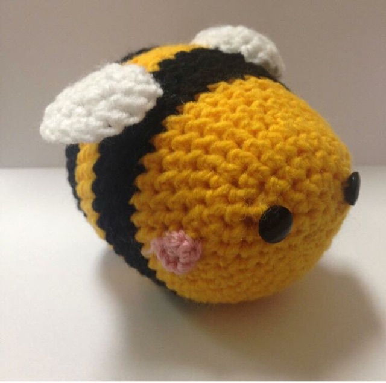
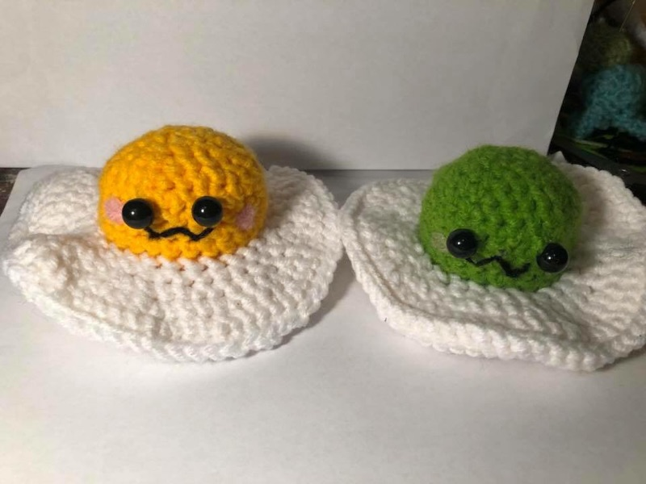
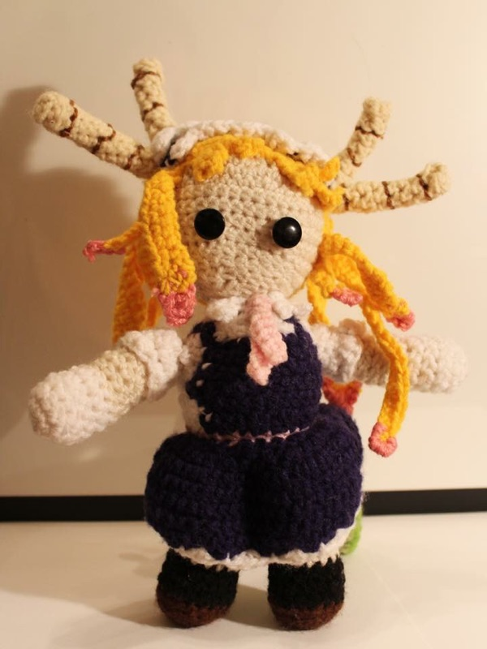

Kacie's Background
Kacie VandenHull got her start in art college first working on various fine art projects and progressing into digital and design work. It was here she had opportunities to try all sorts of styles and learn different programs to enhance her skills. Many of which she had never attempted.
Hippocorn was started when Kacie was in art college. It began as a result of a project to make video game packaging design. She came up with The Magical Adventures of Hippocorn. After talking with family about this project her stepdad mention how Hippocorn sounded like a good name for a business and Hippocorn Designs was born.
Hippocorn Designs
At first, she focused on fine art and then moved more towards crafts when she realized she had a passion for it. This led to an array of craft forms including clay sculpture and jewelry and then eventually led to her working with yarn.
One of the main things Kacie produces with Hippocorn Designs is yarn oriented creations. This came about when she decided to make a Lilo and Stitch hat for herself along with some accessories for cosplays. After receiving many compliments from people wondering where she got it she realized this would be a good thing to try and sell. Ever since then she’s be designing yarn creations ranging from attire accessories like hats, gloves and scarfs to stuffed animals.



Hippocorn Designs can be found a few places online including Etsy where a range of products can be purchased. Kacie also accepts commissions for custom work.